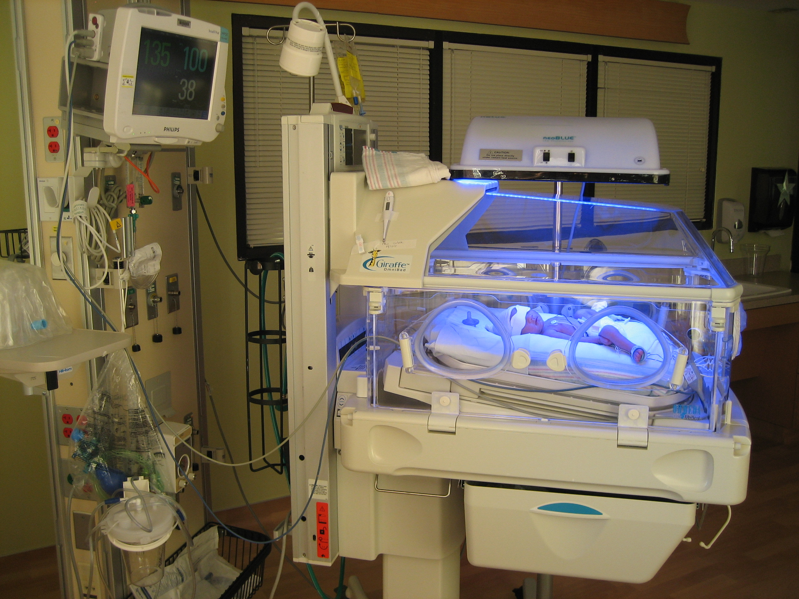

Challenges after birth:
I was breach when I was born, meaning that I didn't flip in utero. Because of this, my mom had to have a c-section to have me. Because I was born prematurely, I had a few issues due to be underdeveloped:
- I was jaundice due to my liver not being fully formed
- I had apnea due to underdeveloped lungs
- I weighed only 4lbs (you are supposed to weight around 7-8 lbs)

This is me as a baby. I was born 5 week premature by cesarean section, and spent 10 days in the NICU before I went home. The light is phototherapy that helps babies born with jaundice. When babies are born prematurly, they usually cannot produce red blood cells. The blue light helps the proccess of forming new red blood cells.